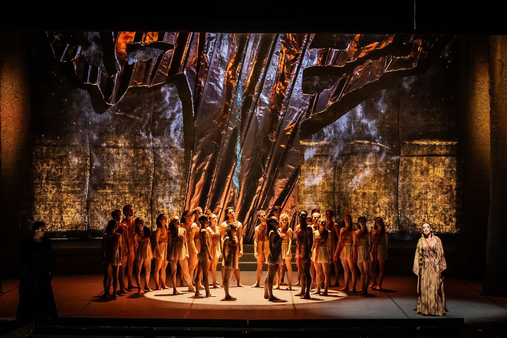

Skąd pochodzi spektakl
Wieczór baletowy
„Fantazja i Fortuna" to widowiskowy wieczór baletowy Opery Bałtyckiej w Gdańsku, którego premiera odbyła się 16 maja 2025 roku. Spektakl składa się z dwóch niezależnych aktów połączonych wspólną osią: emocjonalną intensywnością i refleksją nad ludzką naturą — pierwszy wnika w samotną psychikę zakochanego artysty, drugi otwiera scenę na zbiorowy puls losu.
Choreografię obu części przygotowała Izabela Sokołowska-Boulton — tancerka i pełniąca obowiązki kierownika baletu Opery Bałtyckiej. Kierownictwo muzyczne objął Yaroslav Shemet, scenografię stworzył Damian Styrna, a kostiumy zaprojektowała Katarzyna Konieczka, znana z prac dla Madonny i Marilyna Mansona.
Nasz baletowy spektakl porusza zmysły i serca. Wielka forma muzyczna, ekspresyjny balet i wizualna siła chóru tworzą hipnotyzujące widowisko — refleksję nad naturą miłości, samotności i przynależności.
— Opera BałtyckaW obsadzie premierowej rolę Hectora powierzono Filipowi Michalakowi, Harriet — Milenie Crameri, a Alter ego Hectora — Gento Yoshimoto. W „Fortunie" pojawili się soliści Joanna Moskowicz (sopran), Michał Sławecki (kontratenor) i Adam Kutny (baryton), wspierani przez Chór Opery Bałtyckiej, Operowy Chór Dziecięcy oraz chór dziecięcy „Canzonetta".

Opera Bałtycka, premiera 16 maja 2025
O spektaklu
Dwa muzyczne źródła
„Symfonia fantastyczna" Hectora Berlioza powstała w 1830 roku jako jedno z najważniejszych dzieł wczesnego romantyzmu. Kompozytor opisał w niej własną nieszczęśliwą miłość do irlandzkiej aktorki Harriet Smithson — opium, sny, marsz na szafot i wizja sabatu czarownic stały się muzyczną autobiografią. Berlioz nadał głównej bohaterce muzyczne imię — idée fixe — natrętnie wracający temat, który przeobraża się wraz ze stanem psychiki bohatera.
„Carmina Burana" Carla Orffa to scenicznia kantata z 1937 roku, oparta na zbiorze średniowiecznych pieśni odnalezionym w bawarskim klasztorze Benediktbeuern. Pieśni — w łacinie kościelnej, średniowysokoniemieckim i starofrancuskim — opowiadają o losie, wiośnie, miłości i pijaństwie. Otwierające i zamykające utwór „O Fortuna" stało się jednym z najczęściej cytowanych fragmentów muzyki klasycznej w popkulturze.
Połączenie tych dwóch dzieł na jednej scenie nie jest oczywiste — Berlioz mówi o jednym człowieku, Orff o całej ludzkości. Wieczór baletowy znajduje między nimi most: jednostka i tłum, sen i jawa, namiętność i przeznaczenie.
Kluczowe daty
Liczby spektaklu
O Fortuno, niczym księżyc / wciąż się zmieniasz: / wzrastasz i zanikasz, / a niegodziwe życie / raz uciska, raz koi…
— O Fortuna, Carmina Burana